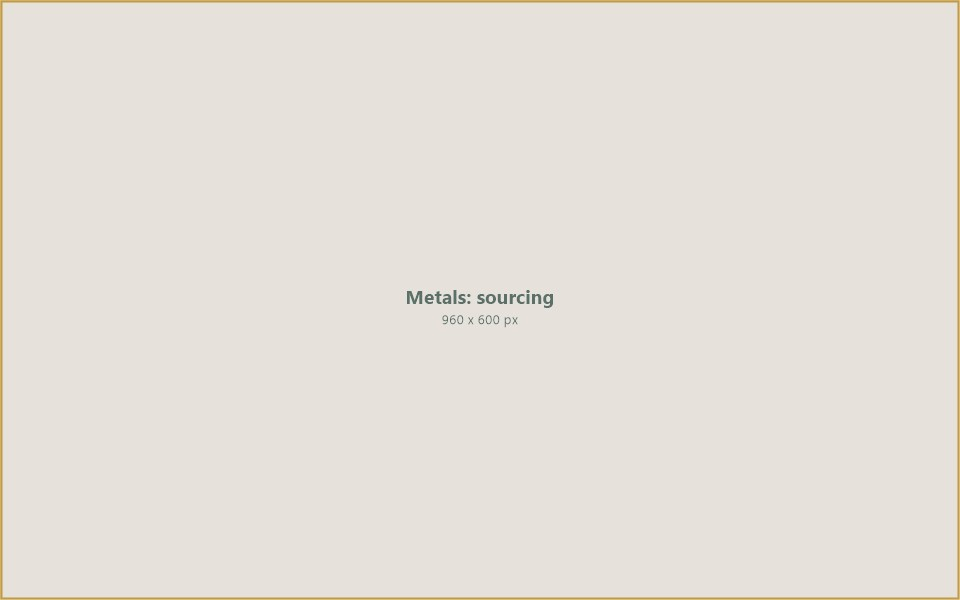
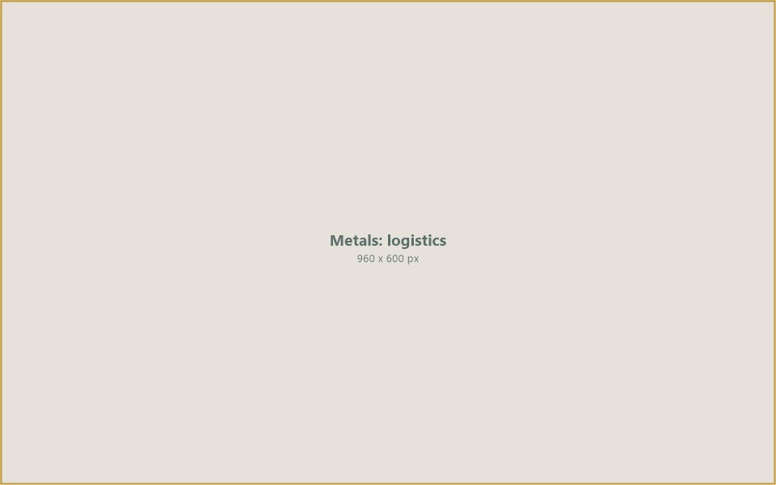

Metals & Precious Commodities
Sourcing and trading gold doré bars, diamonds, copper cathodes, and industrial metals through specialized group companies — connecting mining operations with refineries, manufacturers, and international buyers.
Precious Metals & Industrial Mining
The metals and precious commodities market is one of the world’s most valuable yet complex trading environments. From artisanal gold mining operations seeking access to international refineries, to copper smelters connecting with global manufacturers, the need for verified, structured trading channels has never been greater.
Through specialized group companies, IIC Worldwide facilitates the sourcing and international trade of precious metals, gemstones, and industrial metals. Our platform connects mining operations, smelters, and refineries with qualified buyers — providing the verification, trade finance, and logistics infrastructure needed to execute legitimate transactions.
We operate with the highest standards of compliance and due diligence, ensuring that every transaction meets international regulatory requirements for responsible sourcing, anti-money laundering, and conflict-free supply chain management.
Whether trading gold doré bars from African mining operations, rough diamonds from producing nations, or copper cathodes from smelters, IIC provides the platform, finance, and trust framework that the precious commodities market requires.
How We Facilitate Metals Trade
IIC connects the metals and precious commodities value chain — from mine-site sourcing and assay verification to trade finance, refinery placement, and international delivery.

Mine-Site Sourcing960 x 600 pxResponsible Sourcing
IIC sources precious metals, gemstones, and industrial metals from verified mining operations and smelters. Every source undergoes rigorous due diligence covering legal mining rights, production documentation, environmental compliance, and conflict-free certification. Our sourcing network spans key producing regions across Africa, the Middle East, Asia, and Europe — ensuring access to legitimate supply while maintaining the highest standards of responsible procurement.
Assay, Grading & Verification
Metals and precious commodities require precise quality verification before trading. IIC coordinates assay testing, purity certification, and grading through accredited laboratories and inspection agencies. For gold doré, this means independent assay reports confirming gold content and purity. For diamonds, Kimberley Process certification and gemological grading. For industrial metals, LME-grade verification and chemical analysis. This rigorous verification protects both buyers and sellers and builds the trust needed for repeat trading relationships.
Trade Finance & Settlement
Precious commodity transactions are high-value and require structured financial arrangements. IIC provides trade finance solutions including letters of credit, escrow arrangements, pre-export financing, and settlement services. Our financial products are designed for the specific requirements of metals trade — accommodating the need for secure holding, assay-dependent pricing, and multi-party settlement structures. We work with banking partners experienced in precious metals to ensure every transaction is bankable and compliant.

Secure Logistics960 x 600 pxSecure Logistics & Compliance
Transporting precious metals and high-value commodities requires specialized secure logistics, insurance, and regulatory compliance at every stage. IIC coordinates secure transport from mine sites to vaults, refineries, and end-buyers — working with specialist logistics providers, secure storage facilities, and customs authorities. We ensure full documentation, chain-of-custody records, and compliance with international regulations including LBMA, Kimberley Process, and anti-money laundering requirements.
Metals & Precious Commodities We Trade
Through specialized group companies, we facilitate the sourcing and trading of precious metals, gemstones, and industrial metals across international markets.
Gold Doré Bars
Semi-refined gold doré bars sourced from artisanal and industrial mining operations — assayed, documented, and delivered to international refineries and bullion dealers with full chain-of-custody compliance.
Diamonds
Rough and polished diamonds traded through our precious commodities division — Kimberley Process certified, gemologically graded, and connecting mining sources with cutting centres and international buyers.
Copper Cathodes
LME-grade copper cathodes sourced from smelters and refineries — traded in bulk for manufacturers, construction companies, and metal traders requiring reliable, verified copper supply.
Industrial Metals
Trading of aluminium, zinc, tin, lead, and other industrial metals — connecting mining and smelting operations with manufacturers, fabricators, and commodity traders across global markets.
IIC Worldwide, through its specialized group companies, provides a trusted platform for metals and precious commodity trade. By combining responsible sourcing practices with rigorous verification, structured trade finance, and secure logistics, we enable legitimate transactions that meet the highest international standards.
Our commitment is to build a metals trading platform where every participant — from mine operators and smelters to refineries and end-buyers — can trade with confidence in the authenticity, compliance, and financial integrity of every transaction.
Trade Metals & Precious Commodities
Connect with IIC Worldwide to explore sourcing opportunities for gold, diamonds, copper, and industrial metals through our verified trading platform.